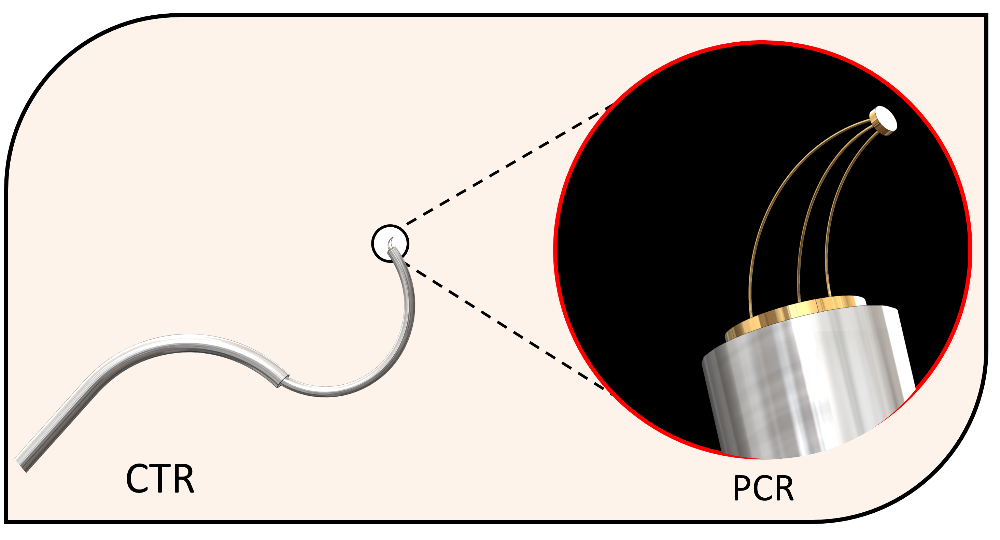

parallel continuum robot made of glass
The Dance of innovation: A New Frontier in Microrobotics
In the dim glow of an operating room, the future is quietly unfolding. Picture this: a robot, no larger than your hand, perched delicately at the tip of a laparoscopic tool. It’s not here to navigate—oh no—it has a more elegant task. With three legs of impossibly thin glass fibers, it is built for finesse, for a dance of dexterity that surgeons could only dream of before. This miniaturized parallel continuum robot, made of optical fiber, promises a revolution at the microscopic scale.
Its flexible links allow it to twist, tilt, and extend, moving with a grace that rivals even nature's most delicate creatures. Imagine this tiny wonder at the end of a surgical instrument, where space is tight and angles are everything. As the fibers bend and flex, the robot manipulates tissues, sutures wounds, and delivers targeted treatments, all while maintaining unparalleled control. One of these fibers can even carry a laser, firing with pinpoint accuracy to excise or cauterize tissue, reducing damage to surrounding areas. It's as if science has summoned a symphony of glass and light to heal the human body.
The Elegance of Microscopic Mastery and Beyond Science Fiction
In another world, far from the hum of surgery, this robot enters the sterile realm of a Scanning Electron Microscope (SEM). It’s here, in the realm of magnified perfection, that true magic happens. The robot doesn’t merely move objects—it orchestrates them. Imagine it assembling micro-scale components, manipulating delicate materials, or performing intricate inspections with a level of control that seems almost supernatural. Its design allows for expansive workspace, despite the confined volumes it operates within. A marvel of engineering, yes—but it feels more like a conjurer’s trick.
 This project involves pushing the boundaries of material science, robotics, and biomedical innovation to bring forth this miniature powerhouse. The robot whispers a future where surgeons can operate without limits, where scientists can explore the unseen, and where the smallest machine can hold the greatest potential.
At the heart of this robot lies a secret—a backbone made of glass optical fibers. These fibers, seemingly fragile yet astonishingly resilient, hold the power to shape this robotic marvel. Their flexibility is the source of its dexterity. Their structure allows energy to flow—not only through mechanical movement but also in the form of light.
This project involves pushing the boundaries of material science, robotics, and biomedical innovation to bring forth this miniature powerhouse. The robot whispers a future where surgeons can operate without limits, where scientists can explore the unseen, and where the smallest machine can hold the greatest potential.
At the heart of this robot lies a secret—a backbone made of glass optical fibers. These fibers, seemingly fragile yet astonishingly resilient, hold the power to shape this robotic marvel. Their flexibility is the source of its dexterity. Their structure allows energy to flow—not only through mechanical movement but also in the form of light.
Theoritical Analysis and results

Experimental validation and results